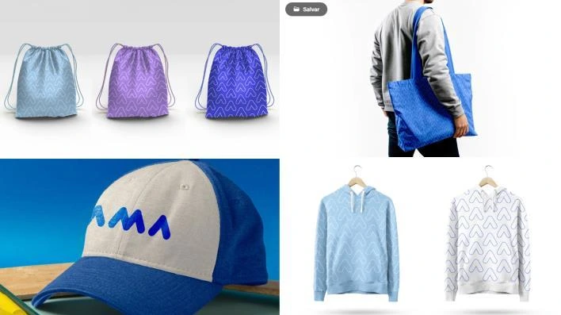

AMA
For this academic rebranding project, we partnered with the Associação de Amigos do Autista (AMA), an organization with more than 40 years of experience and an important legacy of care and inclusion for people on the autism spectrum.
Faced with a brand with such an established history, the challenge was to understand what should remain rather than start from scratch. We sought to translate its longstanding values into a more contemporary identity, able to connect with both the existing AMA community and new audiences.
The project began with four pillars that represent the organization’s essence: ethics, respect, loyalty and professionalism. From these, we developed an identity that balances subtle, geometric forms with more organic, welcoming elements.
Beyond updating the brand’s appearance, the proposal was to create an identity that inspires belonging. A brand that staff, beneficiaries and partners could feel proud of, while presenting AMA to corporate audiences with greater strength and relevance.
The result is an update that looks to the future while retaining its roots: a more contemporary identity that remains recognizable at its core, preserving what made AMA what it is.

